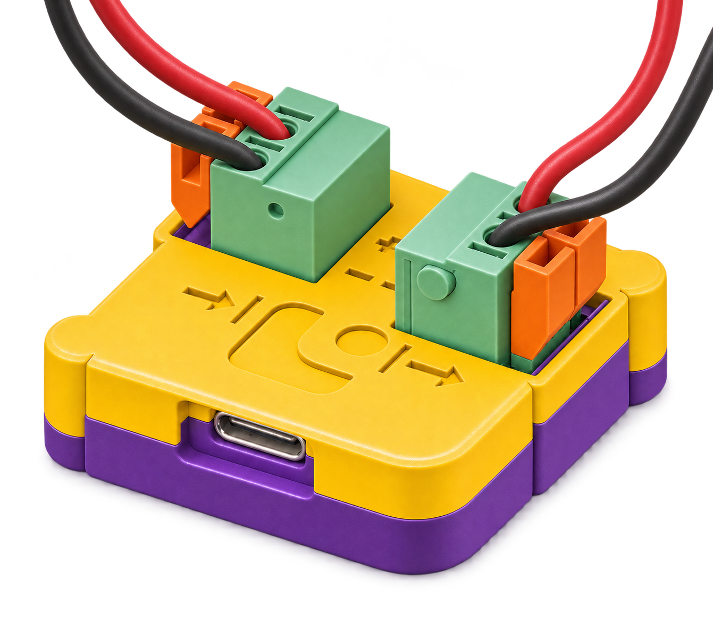

Independent supply A → IN / SOURCE
Match voltage and current limits to the device; voloo does not regulate voltage. Measure polarity before connecting voloo, then turn the supply OFF before wiring.
 Back to voloo 中文
Back to voloo 中文voloo quick start · USB-C edition
Reversed polarity damages the hardware, and current above 3 A can damage it too. Set a current limit on your external supply. Use separate supplies for the device and USB host computer; different ports on one adapter do not count.
Connections Terminal wiring First use

Match voltage and current limits to the device; voloo does not regulate voltage. Measure polarity before connecting voloo, then turn the supply OFF before wiring.
Power the device only from OUT. Disconnect other sources, including USB, batteries and debugger power.
Use a USB data cable. Power the computer from independent supply B.
Color is only an aid. Follow the physical IN / OUT and + / − markings and actual supply polarity.
If residual voltage remains, keep USB connected and discharge until VOUT ≤ 1 V is confirmed. Then turn off and disconnect the external supply, unplug USB-C, and verify both ends are unpowered before handling wires.

If needed, strip 11 mm of insulation. Keep the strands together, and check that any pre-fitted wire end fits the terminal.

Press and hold the matching orange tab toward the circuit board to open the clamp.

Keep holding the tab and push the wire into the adjacent round opening in the green terminal. Make sure the conductor is fully inserted.

Release the tab, then gently pull the wire to check it is secure. No bare copper should be exposed.
Insert the wire into the round opening in the green terminal. The orange tab opens the clamp; it is not a wire entry. Leave the terminal attached to voloo. There are no screws to loosen.

Disconnect power as described above. Hold the matching orange tab and gently pull the wire straight out. Don't force the wire or pry the tab.
First install Node.js from nodejs.org (current LTS recommended; minimum 18), then run in your terminal:
npm install -g @librezoo/voloovoloo uivoloo ls to check from the terminal. No hardware yet? Run voloo demo. See the full guide for AI agent, script and HTTP API integration.
Try a USB data cable, check the connection, then run voloo doctor. On Linux, follow the serial-permission instructions if needed.
OFF does not mean 0 V. Discharge and confirm ≤ 1 V, and check for other power sources connected to the device.
Clearing the overvoltage latch does not restore power automatically. Return to 3.3–28 V, check wiring and current limits, then send a new ON command. No extra overvoltage reset is needed.